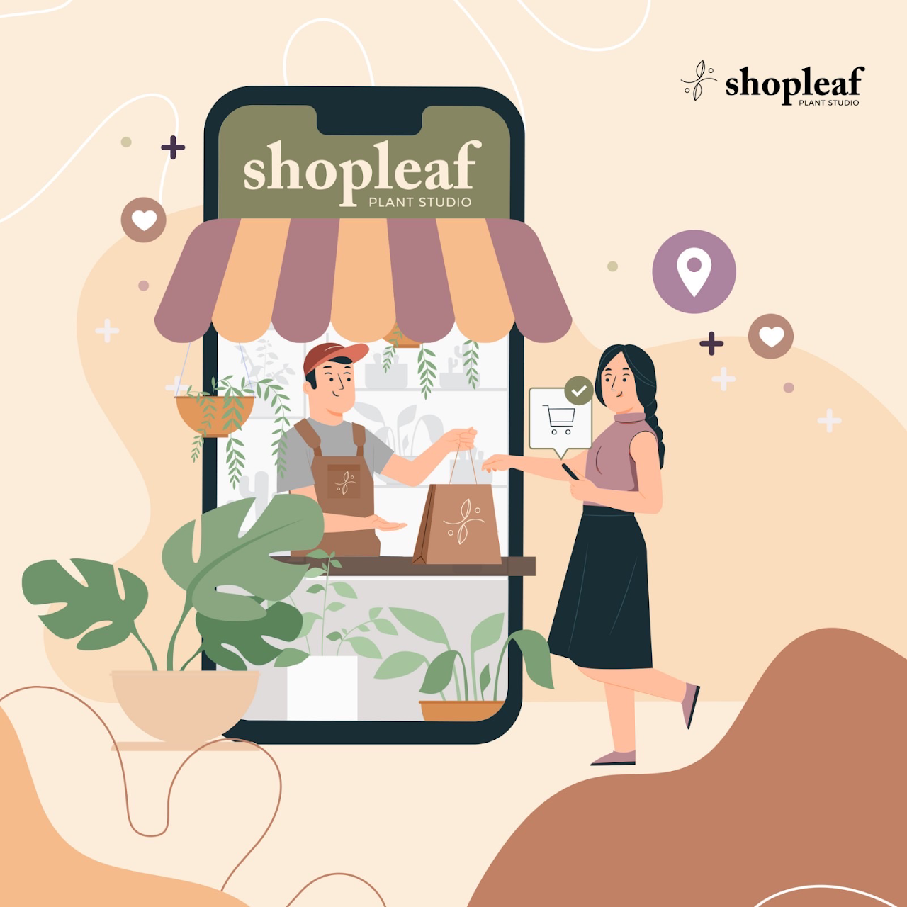

"ABOUT US"
History of the company
What started as a hobby turned into a full-time business for co-founders Kim & Justine. It began as an online shop offering potted plants straight from our makeshift garden in our garage. Today, we now have a physical shop and we're continuously growing and evolving as a brand.
VALUES, MISSION, VISION
Shopleaf is driven by a passion to strengthen people’s relationships with plants and share its benefits with everyone. We source plants from local and international nurseries and deliver healthy potted greens and plant kits with utmost care to every home. But it doesn’t just stop there, we are here every step of the way to make sure that each plant is thriving from foliage down to its roots by providing e-guide, social media tips, virtual assistance and care card instructions.
We at Shopleaf also believe in sustainability and durability that's why we partnered with Ecopots from Europe to bring you quality and beautifully designed pots made from recycled materials. We are also a member of 1% of the planet – an international organization whose members contribute at least one percent of their annual sales to environmental causes.
We believe these are small steps on a world scale but at least it’s a step in the right direction—caring for the planet and partnering with brands and people that uphold the same values like ours.
Shopleaf also fosters a community that is driven by passion and purpose. We believe that plants make our lives fuller and our environments happier and we want to share that to everyone one potted plant at a time.
Company Photo:
